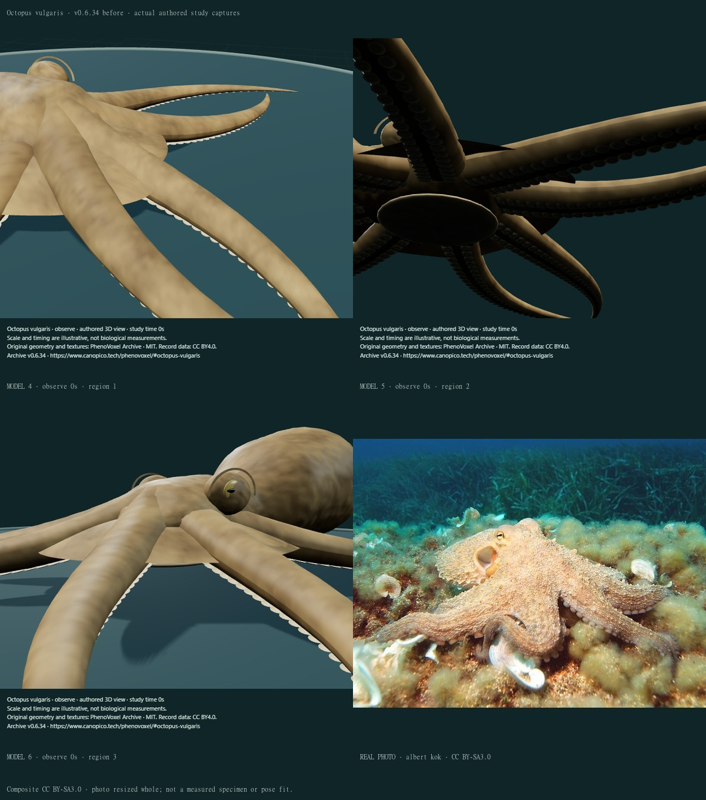
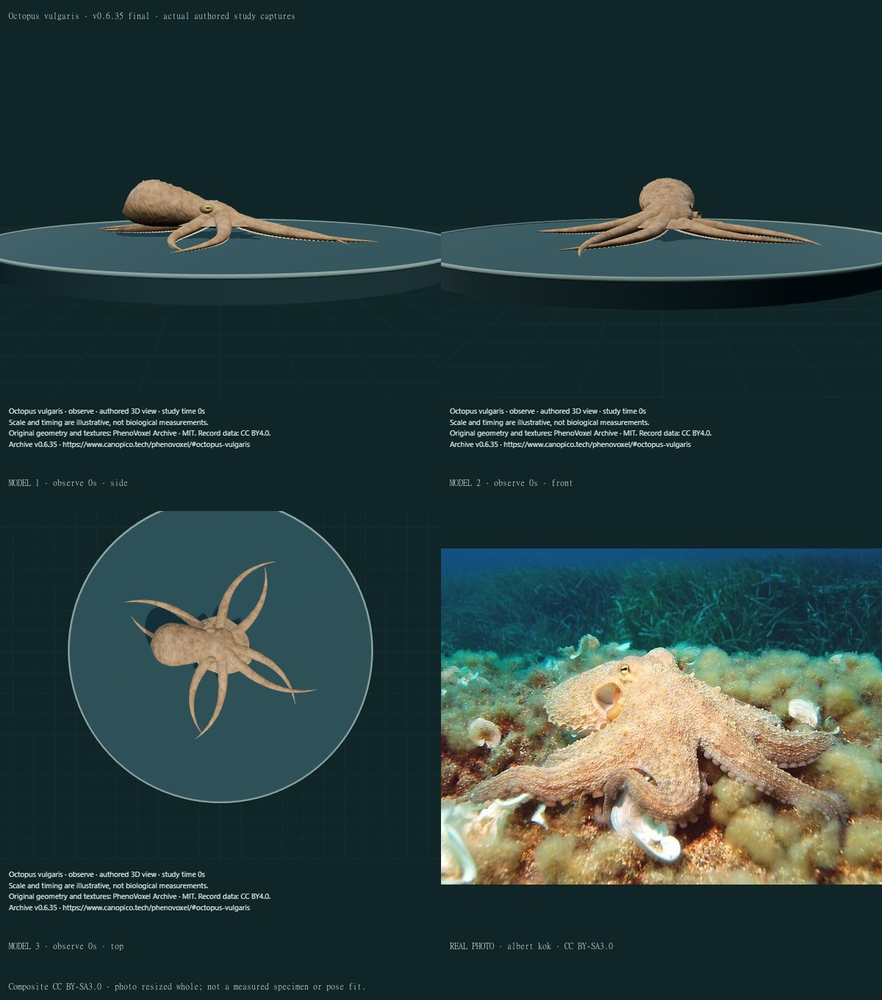
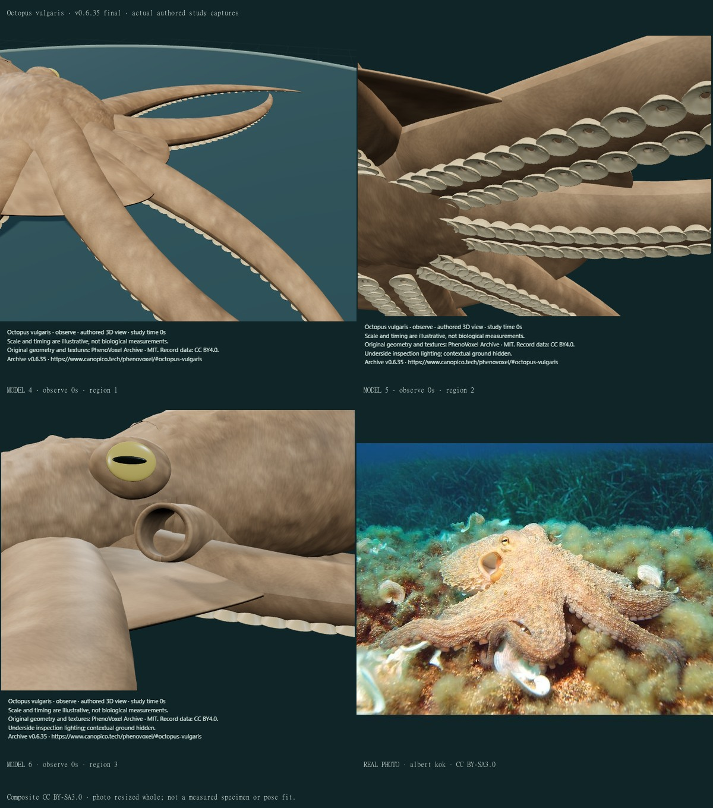
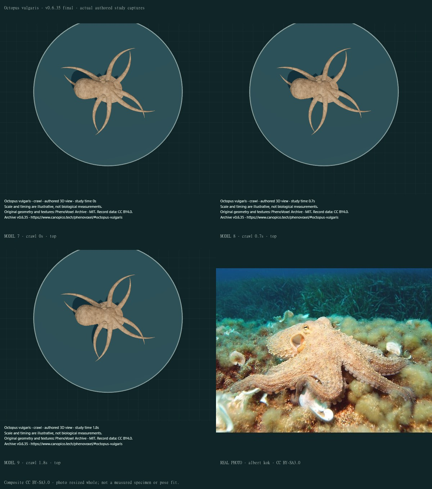
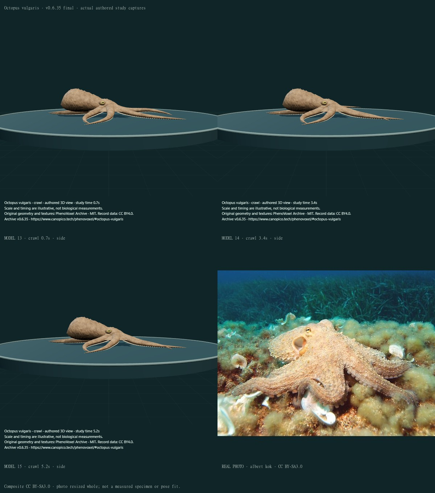
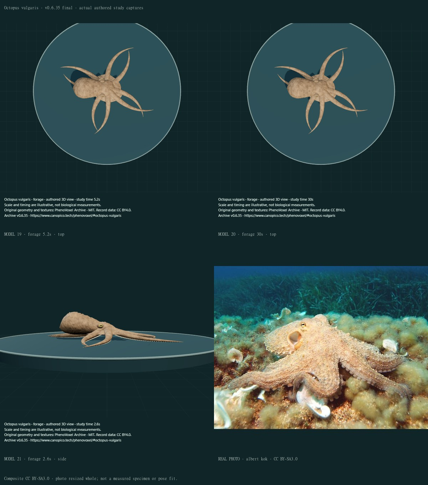
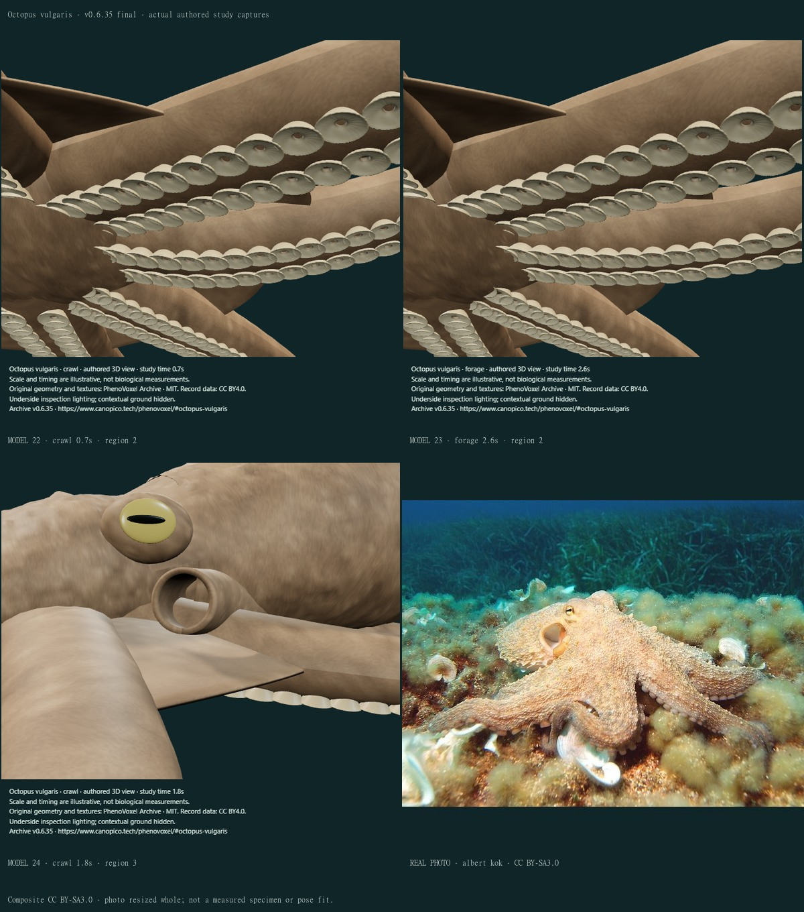
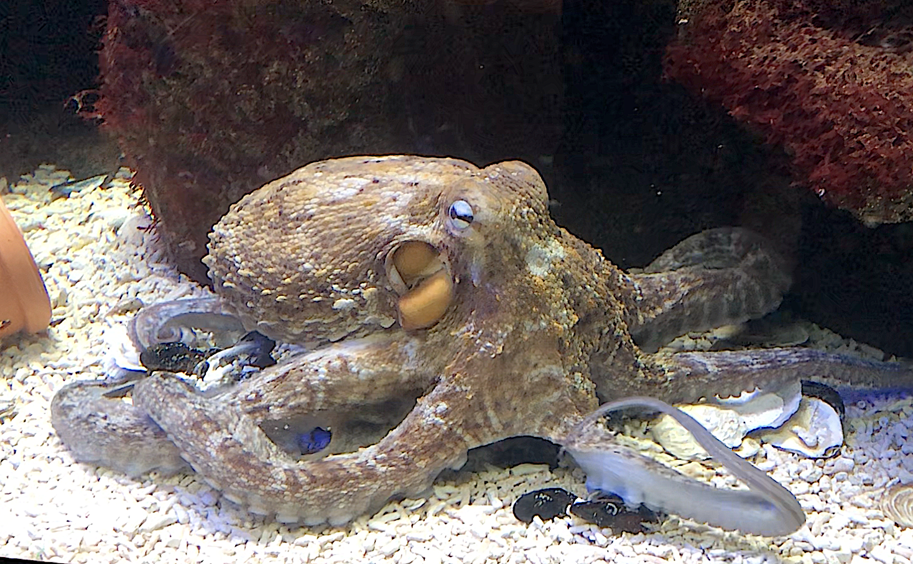

Octopus vulgaris · external sucker and funnel study
v0.6.35 · 24 actual final compiled views, six earlier main-viewer views and ten credited comparison sheets. One existing species corrected; zero additions.
Photograph and model depict different individuals/poses. This is a qualitative comparison, not a fitted specimen, a natural-light match or independent scientific certification.
- Replaced point-filled sucker discs with selected uncapped annular exteriors: folded rim, selected radial relief, central orifice and short throat. Internal sucker tissues remain absent.
- Replaced the capped/occluded funnel cue with thin external walls and an exposed ventral outlet. The selected route and dimensions remain unmeasured; no flow or mantle cavity was added.
- Added a selected mantle/head aperture boundary and lowered selected ventral bases to clear the funnel region. Tissue unions and the internal cavity remain incomplete.
- Added closed thin web margins and removed the invented flat oral cover. Smaller eye cues have corrected lens/pupil depth order; the earlier prototype partly buried the iris.
- Added original reproducible fine numerical skin detail and subtle dorsal relief. This is artwork, not organism/SEM pixels or a measured texture map.
- Added a disclosed camera-side inspection light for selected octopus ventral anatomy, with contextual ground hidden. Other species and ordinary side/front/top lighting retain their previous setup.
- Fit initial instances using their actual posed/scaled cups before normalizing support, then refresh culling bounds through deformation. A rejected prototype floated because unscaled unit-cup bounds were used too early.
- Reset capture-time captions when changing actions; a paused Observe view previously retained the preceding action’s caption time. Preserved the same surfaces and existing partial action statuses. No new motion mechanism, species admission or biological certification.
The model remains an unmeasured, partly stylized adult external study. Arm lengths, the still rather radial/straight spread, narrow distal tapers and basal unions, mantle/head shape, papillae, eye anatomy, skin diversity/optics and true self-collision/contact remain incomplete. The selected neck aperture, short collar and tissue intersections remain approximate; portions of unmodelled anatomy can be visible through the short funnel lumen. The selected 38 sucker pairs per arm, local relief and dimensions are authored choices, not specimen measurements. Fine circumferential grooves remain incomplete. Suckers show an external annulus and short orifice/throat, without a reconstructed internal acetabulum, protuberance, cuticular denticles/hairs, sealing or pressure mechanics. The external funnel has an open lip and short illustrative lumen, but no continuous mantle cavity, valve, pumping or fluid solver. Oral/beak anatomy is absent; the invented flat oral cover was removed. Existing finite arm extension/support and exploratory reach remain partial; food handling, complete crawling and jet escape are unfinished. Underside inspection lighting improves visibility and hides the contextual ground; it is not calibrated natural illumination. No 90-percent accuracy, physiological simulation, independent expert review or biological validation is claimed.
Before · v0.6.34 · sheet 1
Real reference: albert kok · CC BY-SA3.0. Whole photograph resized for comparison; composite sheet CC BY-SA3.0. Rendered models are authored studies, not organism photographs.
Before · v0.6.34 · sheet 2

Real reference: albert kok · CC BY-SA3.0. Whole photograph resized for comparison; composite sheet CC BY-SA3.0. Rendered models are authored studies, not organism photographs.
Final comparison 1

Real reference: albert kok · CC BY-SA3.0. Whole photograph resized for comparison; composite sheet CC BY-SA3.0. Rendered models are authored studies, not organism photographs.
Final comparison 2

Real reference: albert kok · CC BY-SA3.0. Whole photograph resized for comparison; composite sheet CC BY-SA3.0. Rendered models are authored studies, not organism photographs.
Final comparison 3

Real reference: albert kok · CC BY-SA3.0. Whole photograph resized for comparison; composite sheet CC BY-SA3.0. Rendered models are authored studies, not organism photographs.
Final comparison 4
Real reference: albert kok · CC BY-SA3.0. Whole photograph resized for comparison; composite sheet CC BY-SA3.0. Rendered models are authored studies, not organism photographs.
Final comparison 5

Real reference: albert kok · CC BY-SA3.0. Whole photograph resized for comparison; composite sheet CC BY-SA3.0. Rendered models are authored studies, not organism photographs.
Final comparison 6
Real reference: albert kok · CC BY-SA3.0. Whole photograph resized for comparison; composite sheet CC BY-SA3.0. Rendered models are authored studies, not organism photographs.
Final comparison 7

Real reference: albert kok · CC BY-SA3.0. Whole photograph resized for comparison; composite sheet CC BY-SA3.0. Rendered models are authored studies, not organism photographs.
Final comparison 8

Real reference: albert kok · CC BY-SA3.0. Whole photograph resized for comparison; composite sheet CC BY-SA3.0. Rendered models are authored studies, not organism photographs.
Additional real funnel reference

Olga Ernst · Zoo am Meer, Bremerhaven, 8 March2025 · CC BY-SA4.0. Original PNG delivered unchanged; source caption identity is not an independent determination.
Evidence and access
The existing albert kok photo and its nominal Octopus vulgaris caption/bytes are retained; no independent redetermination of the individual within the common-octopus complex is claimed. The original Olga Ernst captive funnel photograph was also inspected, with source/grant and exact download/delivery hash retained. Actual BJNANO2014 Figure1 and selected methods were inspected. Its SEM preparations are not live colours. Internal acetabular hairs were not placed on the exposed infundibulum. PLOS2013 introductory/methods text was accessible; its figure retrieval was not a successful new inspection. Structure/mechanical-properties is disambiguated as online2013/issue2014, not falsely treating the online year as wrong.
- Primary crawling study · Levy, Flash and Hochner (2015)
Selected primary abstract was read from the indexed PubMed/publisher result: non-rhythmic arm recruitment and pushing by elongation. No video trajectories, figures or forces were fitted.
- Tramacere et al. · Structure and mechanical properties of Octopus vulgaris suckers (2013 online; 2014 issue)
Selected indexed results describe two sucker rows and infundibulum/acetabulum organization; full PMC opening presented a browser check. No actual figure or internal sucker dimensions were obtained. Citation disambiguated using indexed PubMed24284894: online27 November2013, issue6 February2014. The earlier2013 year was not by itself wrong; this is distinct from the PLOS morphology/adhesion paper. Selected indexed morphology/methods were read, not fitted tissue parameters or a new figure inspection.
- Tramacere, Appel, Mazzolai and Gorb (2014) · Hairy suckers
Actual publisher Figure1 was inspected: exposed infundibulum, rim and orifice; prepared SEM views distinguish radial/circumferential relief from internal acetabular hairs. Those hairs are not placed on the exposed outer cup. Selected methods describe freshly killed Livorno animals, fixed/dehydrated/coated for SEM; these are not live optical maps. No source pixels, scale fitting or adhesion-force solver is used.
- Tramacere et al. (2013) · The morphology and adhesion mechanism of Octopus vulgaris suckers
Official seven-page PDF introductory/selected methods text was readable. A figure screenshot request timed out or returned no inspectable image, so no new PLOS figure/video inspection is counted. The internal chamber/protuberance and proposed sealing mechanism are not reconstructed or validated here.
- Smithsonian Ocean · Octopus shows off its funnel
Actual account text read: the exhalant funnel is associated with the front of the mantle. This supports qualitative anatomical context only; its image was not downloaded and no jetting mechanism or measured pose is inferred.
Materials and review boundaries
Real photograph: albert kok, CC BY-SA3.0, retained unchanged in the archive and resized whole in comparison sheets. Composite comparison sheets are CC BY-SA3.0; original numeric code/materials and standalone model PNGs retain MIT. Publisher paper figures are cited/private and not redistributed here.
Numerical surface/source checksums and scope.
Earlier private candidates retained underlit sucker faces, hid the funnel, partly buried the iris, and briefly floated after unit instanced bounds contaminated the normalization. These were rejected/corrected after actual screenshots. Later compiled frames exposed blocky mantle loft sections and a dorsal seam; those frame sets were rejected, the lofts were smoothed and the selected dorsal tissue bridge broadened before final recapture. The oral cover and zero-thickness web margins were also revised. A later reference comparison rejected a funnel route over anterior arm tissues; the candidate neck aperture, short collar and selected ventral base heights were revised, but their unions/internal continuity remain incomplete. No rejected draft is counted among final compiled views.
Software tests establish mesh openings, support normalization, retained/reset geometry, culling bounds and provenance consistency. They do not establish biological correctness, tissue mechanics or calibrated optics.
307 records after verified deployment; 243 still missing to 550. Further Mollusca realism, 45 of the requested 50 new large animals and unfinished movement/development remain in the queue.